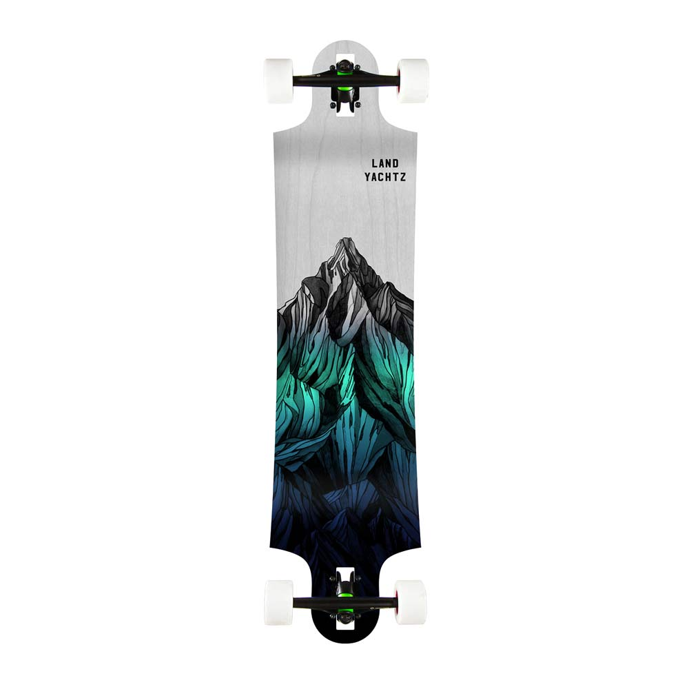
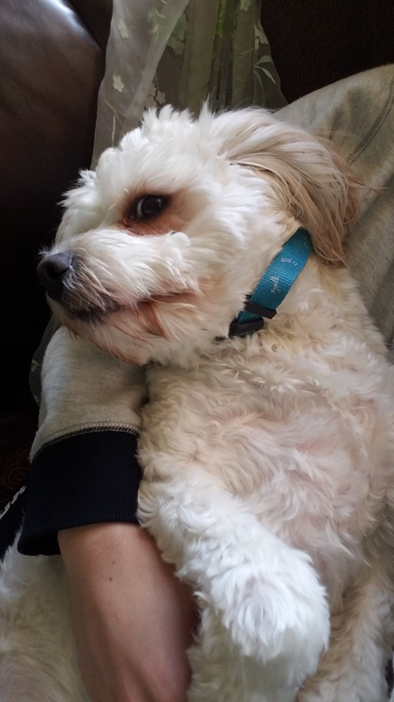
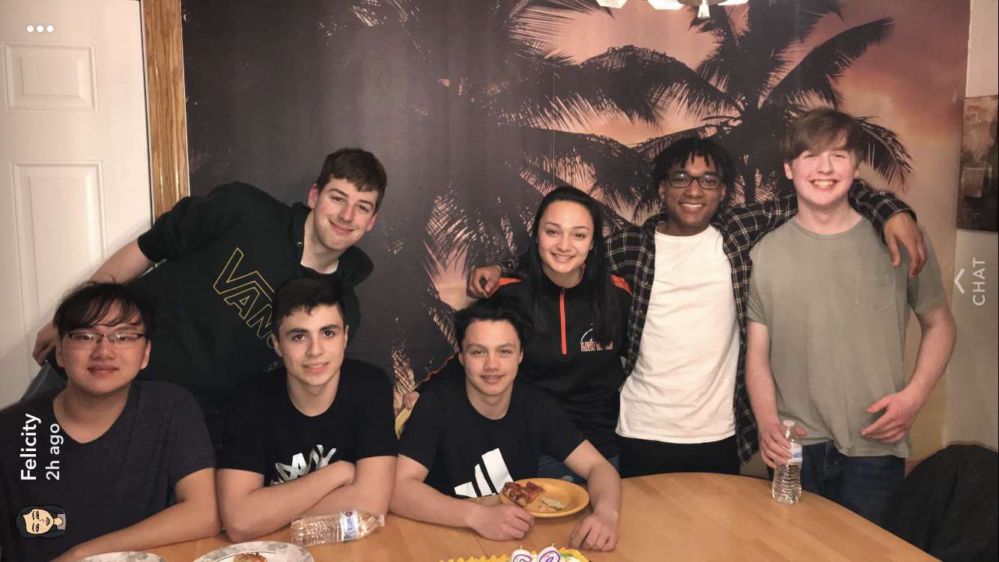

I am a computer science major and this website is a project of my CSC-106 programming course. It is very basic. I am a freshman here at URI and I have
a dog named Louis(seen on the left). In my free time I enjoy working out, longboarding, and hiking. Here is a picture of the type of longboard I own(seen on the right). I enjoy playing video games such as moba's and story games,
but the majority of games I play are fps games. Last but not least, I put a picture of my friend group as a big picture at the bottom as they are a big part of my life.
This project was extremely challenging and took me a lot more hours than I would care to admit
but now I am finally done. I am the type of person who is a perfectionist so although times were definetly stressful while making this project
I had a lot of fun messing around and playing with a lot of the elements.
